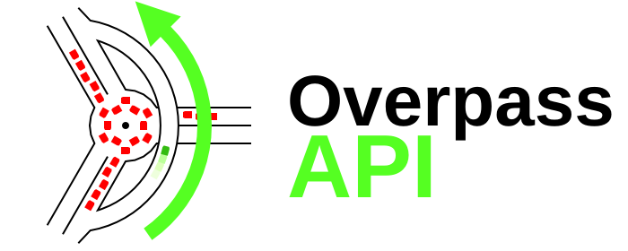

Use
Blog
POIs showing Maps
Public Transport Diagrams
Permanent OSM ID
Query
Query and Convert Forms
Language Guide
Language Reference
Areas
Employ
Output Formats
OpenLayers mashup
Wiki template handling
Command Line and HTTP handling
Clone
Technical overview
No frills
Complete installation
Source Code